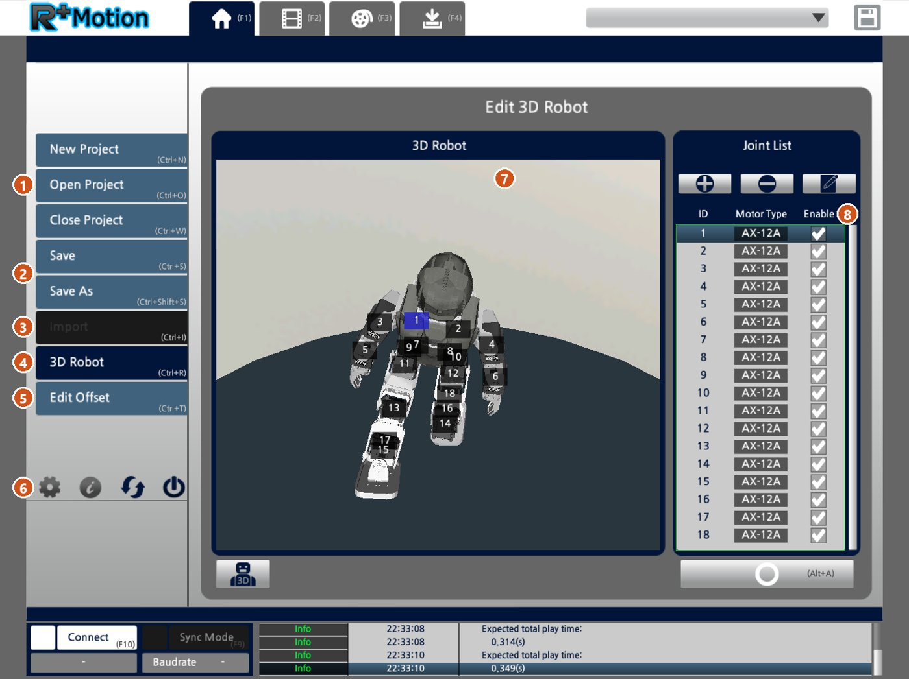
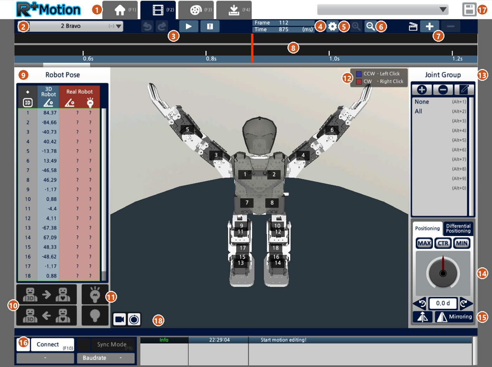
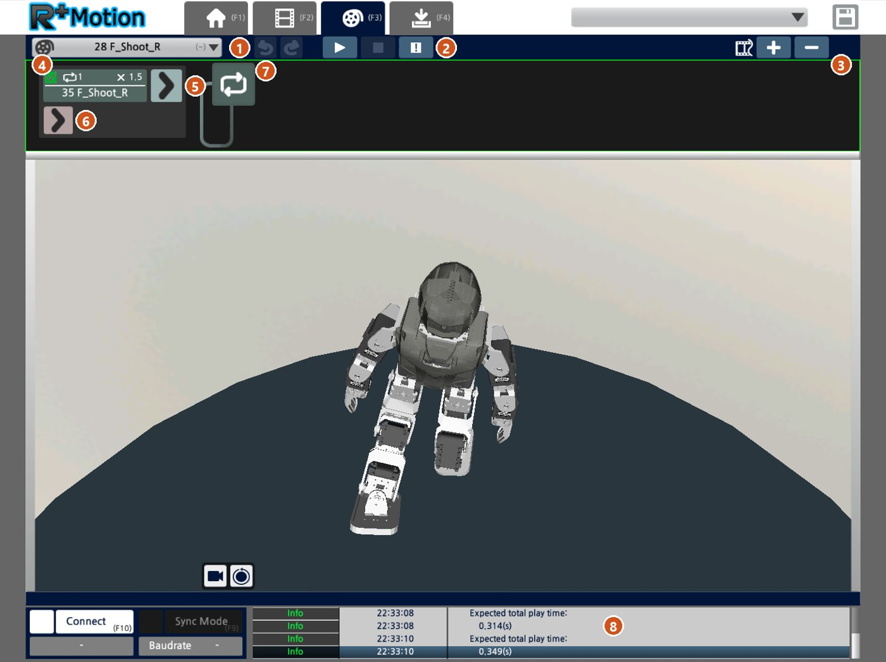
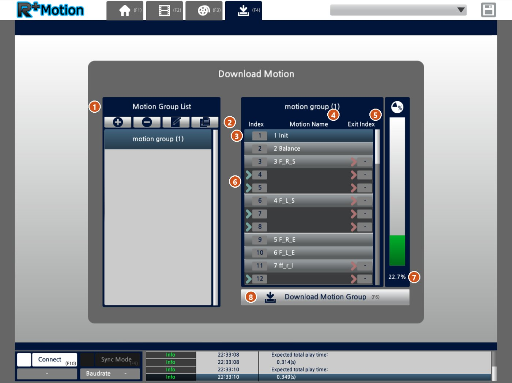

R+Motion: как устроен .mtnx
Файл движений — это обычный XML. Разберёшься, как он устроен, и сможешь читать и чинить движения, а не гадать.
Вкладка F1: проект и модель робота

- New, Open, Close Project — создать, открыть, закрыть файл движений.
- Save / Save As — сохранить. Перед большими правками делай «Save As» с датой в имени: если всё сломаешь, откатишься.
- Import — взять движения из другого файла (неактивна, пока нечего импортировать).
- 3D Robot — модель и список суставов (открыто на скрине).
- Edit Offset — поправки нулей серво. Если в одной и той же позе твой робот стоит криво, а модель ровно, правь смещение тут один раз, а не в каждой странице.
- Настройки программы, справка, обновление, выход.
- 3D-модель с номерами ID. Самый быстрый способ узнать, какой ID у какого сустава.
- Joint List: ID, тип серво (у Bioloid AX-12A) и Enable — участвует ли сустав в движениях.
Вкладка F2: редактор страниц

- Вкладки. F1 — главная (открыть или создать файл), F2 — редактор страниц (основная работа тут), F3 — юниты и порядок страниц, F4 — залить движения в контроллер.
- Выбор страницы. Какое движение сейчас редактируешь.
- Пуск страницы на 3D-модели (или на роботе, если включён Sync, см. 16). «!» — аварийный стоп.
- Frame / Time — где стоит курсор: номер кадра и время в мс. 112 кадров = 875 мс, то есть 1 frame ≈ 7.8 мс.
- Joint Parameters (шестерёнка). Flexibility Level — мягкость каждого серво по ID: чем больше число, тем мягче сустав. Например, мягкие голеностопы помогают роботу не падать от удара. Inertial Force Level — насколько плавно серво разгоняются и тормозят на этой странице.
- Масштаб шкалы времени.
- + / − — добавить шаг (позу) в текущее место шкалы или удалить выбранный.
- Шкала времени. Красная линия — текущий момент, шаги стоят на ней отметками. Перетаскивай шаг, чтобы движение шло быстрее или медленнее.
- Robot Pose — углы всех 18 серво в градусах. «3D Robot» — поза в редакторе, «Real Robot» — что сейчас на живом роботе (знаки «?» означают, что робот не подключён).
- Перенос позы. Верхняя кнопка (3D → робот) отправляет позу на робота, нижняя (робот → 3D) считывает позу с робота в редактор.
- Момент серво. Горящая лампочка — серво держат, погасшая — серво мягкие, их можно крутить руками.
- Клик по суставу на 3D-модели: левая кнопка мыши крутит против часовой, правая — по часовой.
- Группы суставов. None — ничего не выбрано, All — все. Кнопками +/− делаешь свои группы (например, «левая нога»), чтобы двигать их разом.
- Точная установка выбранного сустава: колесо или число в градусах. MAX, CTR и MIN — край, центр и другой край.
- Mirroring — зеркалит позу (левое ↔ правое) по правилу из раздела ниже.
- Connect (F10) — подключиться к роботу через COM-порт. Sync Mode (F9) — всё, что меняешь в 3D, сразу повторяет живой робот. А если нажать Пуск (3), страница проиграется прямо на роботе по проводу, без заливки в контроллер. Так удобно проверять движения на ходу. Осторожно, робот резко дёрнется в новую позу.
- Сохранить файл .mtnx.
- Вид 3D-модели — повернуть камеру и сбросить вид.
Как удобнее всего делать позу: подключи робота (16), сними момент (11), выстави позу руками, считай её в редактор (10, нижняя кнопка), добавь шаг (7). Так в 5 раз быстрее, чем крутить каждый сустав мышкой. Перед тем как снимать момент, держи робота: он сразу обмякнет.
Вкладка F3: юниты (из каких страниц состоит движение)
Страница — это одно движение из шагов. Юнит — то, что на самом деле запускает Task: цепочка страниц с повторами, скоростью и страницей выхода.

- Выбор юнита. Имя юнита и имя страницы внутри могут не совпадать (здесь 28 и 35), поэтому по именам номера легко перепутать.
- Пуск, стоп и «!». Проиграть юнит целиком, остановить. «!» — аварийный стоп.
- + / − — добавить страницу в цепочку или убрать её.
- Плитка страницы. Галочка — шаг включён,
⟲1— сколько раз повторить,×1.5— скорость (больше = быстрее), ниже имя страницы. - Стрелка «дальше» — какая страница играет следующей.
- Нижняя стрелка — страница выхода. Её доигрывает
motion:-:50 = 0при остановке. У сильного удара тут стоит его вторая страница (см. ниже). - Зацикливание. Юнит крутится, пока его не остановят: так устроена ходьба. Если случайно зациклил стойку, Task не сможет запустить ничего другого.
- Expected total play time — сколько секунд займёт юнит. По этому числу ставь паузу в Task, чтобы не оборвать движение (подъёмы длятся 4–10 с).
Ускорить движение без перестановки шагов: подними скорость в плитке (4), например ×1.2. Для удара это удобнее, чем двигать каждый шаг на шкале.
Вкладка F4: заливка в робота и настоящие номера

- Motion Group List — наборы движений для заливки. Обычно хватает одного.
- Добавить, удалить, переименовать, скопировать группу.
- Index — номер, который пишешь в Task (
motion:-:50 = Index). В файле .mtnx он лежит какcallIndex. - Motion Name — имя юнита.
- Exit Index — страница выхода юнита.
- Пустые строки со стрелкой — это продолжение юнита. «3 F_R_S» занимает индексы 3, 4 и 5, поэтому следующий «4 F_L_S» получает уже 6, а «5 F_R_E» — 9. Из-за этого номера и уезжают от имён.
- Сколько памяти контроллера под движения занято.
- Download Motion Group (F6) — залить в контроллер. Робот должен быть подключён (Connect).
Главное правило: не знаешь, какой номер писать в Task, — открой F4 и посмотри Index. Подбирать номер на роботе наугад не нужно.
1. Номер страницы ≠ число в имени
В Task ты пишешь motion:-:50 = N, но N — это не число из имени страницы («36 F_Shoot_R»). Настоящий номер лежит в конце файла:
<callFlow callIndex="37" subIndex="0" exitIndex="0" flow="36 F_Shoot_R" />callIndex — номер для Task, flow — имя в редакторе. Из-за пропусков в нумерации они расходятся, иногда сильно. Не подбирай номер на роботе наугад: найди в файле callFlow, это займёт секунду.
2. Страница → поза → кадр
<Page name="1 Init">
<step frame="125" pose="-81.15 80.86 ..." />
</Page>pose— 18 углов в градусах, по порядку для серво ID 1…18.- Перевод в деления AX-12:
pos = 512 + градусы × 1023 / 300. frameв наших файлах всегда растёт внутри страницы (9, 18, 30…), поэтому это время от начала страницы, а длительность кадра равна разности соседних. Если собираешь страницу скриптом, пиши frame нарастающим итогом. Когда мы записали кадры не по порядку (14, 50, 90, 30…), контроллер проскочил их мгновенно.
3. Зеркало движения (правое ↔ левое)
Чтобы сделать удар левой из удара правой, бери пары суставов и меняй их так:
(a, b) → (−b, −a)Время кадров оставь как есть. У нас правый сильный удар расходился с зеркалом левого на 5.5° и ронял робота. Сделали точное зеркало, и после удара робот стоит так же, как после левого.
4. Удар из двух страниц
Сильный удар — это сама страница плюс её страница выхода. Пара указана в юните:
<unit main="..." exit="..." />Если зеркалишь или правишь удар, меняй обе страницы, иначе после удара робот уходит в чужую позу.
5. Ходьба — карусель страниц
Ходьба вперёд — это цепочка «шаг правой → шаг левой → …» с отдельными страницами входа и выхода. Поэтому стоп через motion:-:50 = 0 сначала доигрывает выход и только потом встаёт (см. Task).
Совет. Если меняешь колени (например, сажаешь робота ниже), пересчитай и голеностоп. Иначе центр масс уезжает, и робот валится вперёд или назад на всех движениях сразу.
R+Motion: how .mtnx works
A motion file is plain XML. Once you know its structure you can read and fix motions instead of guessing.
Tab F1: project and robot model
- New, Open, Close Project create, open, close a motion file.
- Save / Save As. Before big edits, "Save As" with the date in the name so you can roll back.
- Import takes motions from another file (greyed out when there's nothing to import).
- 3D Robot shows the model and joint list (open in the screenshot).
- Edit Offset sets servo zero corrections. If your robot stands crooked in a pose where the model is straight, fix the offset here once instead of in every page.
- Program settings, help, update, exit.
- 3D model with ID numbers. The fastest way to see which ID is which joint.
- Joint List: ID, servo type (AX-12A on Bioloid) and Enable = whether the joint takes part in motions.
Tab F2: page editor
- Tabs. F1 home (open or create a file), F2 page editor (main work happens here), F3 units and page order, F4 download motions to the controller.
- Page selector. Which motion you're editing.
- Play the page on the 3D model (or the robot, if Sync is on, see 16). "!" is the emergency stop.
- Frame / Time at the cursor. 112 frames = 875 ms, so 1 frame ≈ 7.8 ms.
- Joint Parameters (gear). Flexibility Level sets how soft each servo is, by ID: higher number = softer joint. Soft ankles, for example, help the robot not fall from a kick. Inertial Force Level sets how smoothly servos speed up and slow down on this page.
- Zoom the timeline.
- + / − adds a step (pose) at the cursor or deletes the selected one.
- Timeline. The red line is the current moment, steps are marks on it. Drag a step to make the motion faster or slower.
- Robot Pose lists all 18 servo angles in degrees. "3D Robot" = editor pose, "Real Robot" = live robot ("?" = not connected).
- Pose transfer. Top button (3D → robot) sends the pose to the robot, bottom (robot → 3D) reads the robot's pose into the editor.
- Servo torque. Lit bulb = servos hold, dark bulb = servos go limp and you can move them by hand.
- Click a joint on the 3D model: left mouse button turns it counter-clockwise, right button clockwise.
- Joint groups. None selects nothing, All selects everything. Make your own groups with +/− (e.g. "left leg") to move them together.
- Precise control for the selected joint: dial or value in degrees. MAX, CTR and MIN are one limit, centre and the other limit.
- Mirroring copies the pose left ↔ right using the rule below.
- Connect (F10) connects to the robot over COM. Sync Mode (F9) makes the live robot follow every change in 3D. Press Play (3) and the page plays right on the robot over the cable, no upload needed. Handy for testing motions quickly. Careful: the robot jumps into the new pose.
- Save the .mtnx file.
- 3D view: rotate the camera and reset the view.
Fastest way to make a pose: connect (16), turn torque off (11), pose the robot by hand, read it into the editor (10, bottom button), add a step (7). Five times faster than turning each joint with the mouse. Hold the robot before turning torque off: it goes limp at once.
Tab F3: units (which pages a motion is made of)
A page is one motion made of steps. A unit is what Task actually calls: a chain of pages with repeats, speed and an exit page.
- Unit selector. The unit name and the page inside can differ (28 vs 35 here), which is why numbers get confusing.
- Play, stop and "!". Play the whole unit, stop. "!" is the emergency stop.
- + / − adds a page to the chain or removes it.
- Page tile. Checkbox = step enabled,
⟲1= repeat count,×1.5= speed (higher = faster), page name below. - "Next" arrow = which page plays next.
- Bottom arrow = exit page.
motion:-:50 = 0plays it when stopping. For a power kick this is its second page (see below). - Loop. The unit repeats until stopped, which is how walking works. Accidentally loop the stance and Task can't start anything else.
- Expected total play time = unit length in seconds. Use it for the wait in Task so you don't cut a motion short (get-ups take 4–10 s).
Speed up a motion without moving steps: raise the tile speed (4), e.g. ×1.2. Easier than dragging every step on the timeline.
Tab F4: download and the real numbers
- Motion Group List = sets of motions to download. One is usually enough.
- Add, delete, rename, copy a group.
- Index = the number you use in Task (
motion:-:50 = Index). In the .mtnx file it'scallIndex. - Motion Name = unit name.
- Exit Index = the unit's exit page.
- Empty rows with an arrow continue the unit above. "3 F_R_S" takes indexes 3, 4 and 5, so the next one, "4 F_L_S", gets 6, and "5 F_R_E" gets 9. That's how numbers drift from names.
- How much controller memory the motions use.
- Download Motion Group (F6) uploads to the controller. The robot must be connected (Connect).
Main rule: not sure which number to write in Task? Open F4 and read the Index. No need to guess on the robot.
1. Page number ≠ number in the name
In Task you write motion:-:50 = N, but N is not the number in the page name ("36 F_Shoot_R"). The real number is at the end of the file:
<callFlow callIndex="37" subIndex="0" exitIndex="0" flow="36 F_Shoot_R" />callIndex is the number for Task, flow is the editor name. Gaps in numbering make them drift apart. Before guessing numbers on the robot, search the file for callFlow. It takes a second.
2. Page → pose → frame
<Page name="1 Init">
<step frame="125" pose="-81.15 80.86 ..." />
</Page>pose= 18 angles in degrees, in order for servo ID 1…18.- To AX-12 units:
pos = 512 + degrees × 1023 / 300. framealways increases within a page in our files (9, 18, 30…), so it is time since page start; step length = difference of neighbours. Generating pages by script? Write cumulative frames. When we wrote "time going backwards" (14, 50, 90, 30…) the controller skipped steps instantly.
3. Mirroring (right ↔ left)
To turn a right kick into a left one, take each joint pair and swap like this:
(a, b) → (−b, −a)Keep frame times as is. Our right power kick was 5.5° off its mirror and made the robot fall. After an exact mirror it stood as well as the left one.
4. Two-page kicks
A power kick is the page plus its exit page, linked in the unit:
<unit main="..." exit="..." />If you mirror or edit a kick, edit both pages, or the robot ends up in a wrong pose afterwards.
5. Walking is a page carousel
Forward walk is a chain "right step → left step → …" with separate entry and exit pages. That's why stopping with motion:-:50 = 0 plays the exit page first (see Task).
Tip. If you change knee angles (e.g. a lower stance), recompute the ankles too. Otherwise the centre of mass shifts and the robot tips forward or back on every motion.